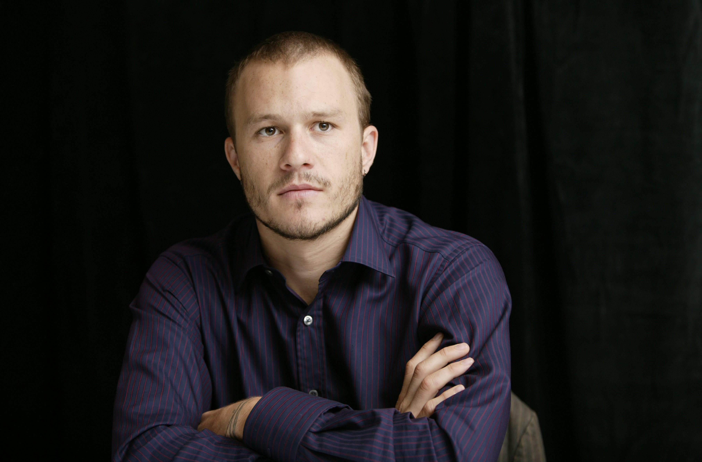
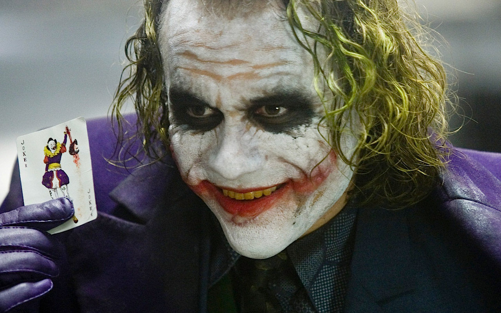
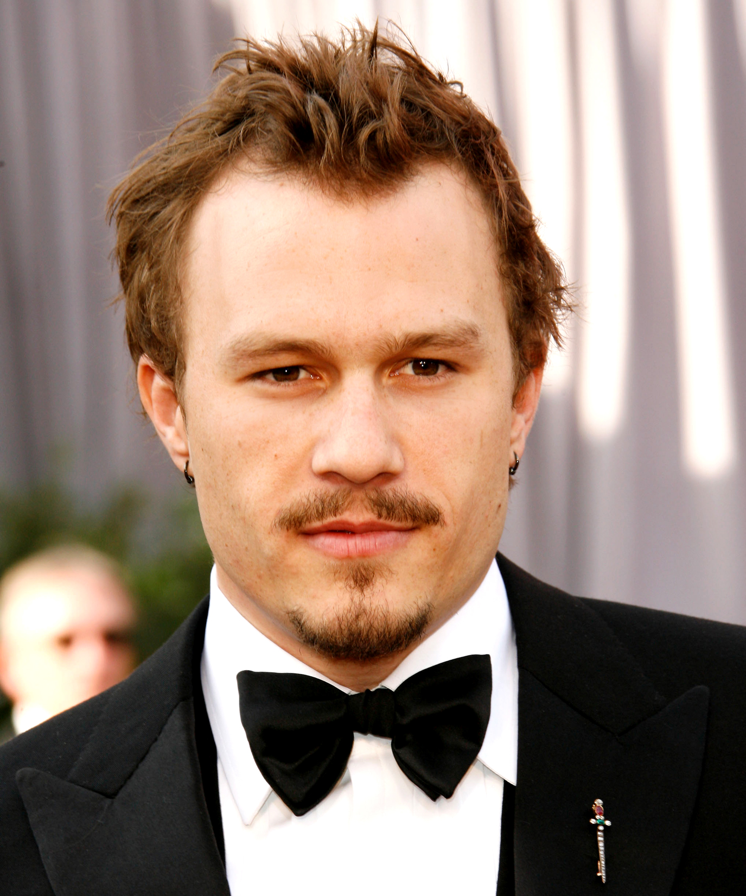
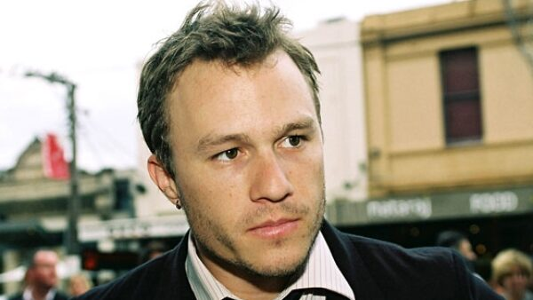
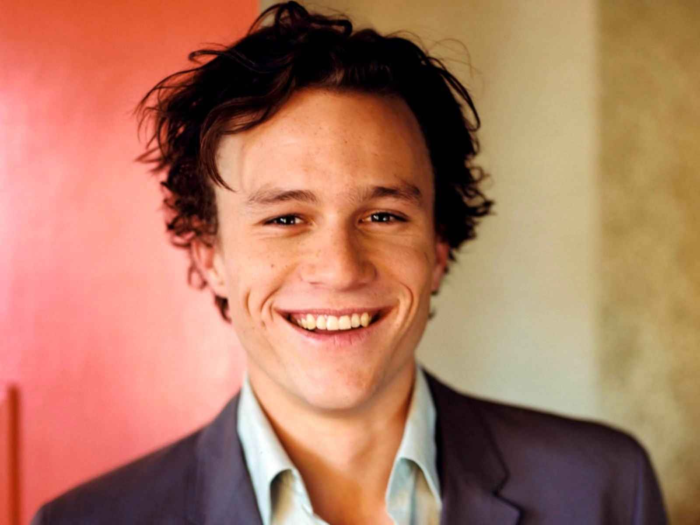

Heath Ledger





Heath Ledger is easily one of the most overrated actors of all time.
Heath Ledger is easily one of the most overrated actors of all time.
When hunky, twenty-year-old heart-throb Heath Ledger first came to the attention of the public in 1999, it was all too easy to tag him as a "pretty boy" and an actor of little depth. He spent several years trying desperately to sway this image, but this was a double-edged sword. His work comprised nineteen films, including 10 Things I Hate About You (1999), The Patriot (2000), A Knight's Tale (2001), Monster's Ball (2001), Ned Kelly (2003), The Brothers Grimm (2005), Lords of Dogtown (2005), Brokeback Mountain (2005), Casanova (2005), Candy (2006), I'm Not There (2007), The Dark Knight (2008) and The Imaginarium of Doctor Parnassus (2009). He also produced and directed music videos and aspired to be a film director.
Heath Ledger was born on the fourth of April 1979, in Perth, Western Australia, to Sally (Ramshaw), a teacher of French, and Kim Ledger, a mining engineer who also raced cars. His ancestry was Scottish, English, Irish, and Sephardi Jewish. As the story goes, in junior high school it was compulsory to take one of two electives, either cooking or drama. As Heath could not see himself in a cooking class he tried his hand at drama. Heath was talented, however the rest of the class did not acknowledge his talent. When he was seventeen he and a friend decided to pack up, leave school, take a car and rough it to Sydney. Heath believed Sydney to be the place where dreams were made or, at least, where actors could possibly get their big break. Upon arriving in Sydney with a purported sixty-nine cents to his name, Heath tried everything to get a break.
His first real acting job came in a low-budget movie called Blackrock (1997), a largely unimpressive cliché; an adolescent angst film about one boy's struggle when he learns his best mate raped a girl. He only had a very small role in the film. After that small role Heath auditioned for a role in a T.V. show called Sweat (1996) about a group of young Olympic hopefuls. He was offered one of two roles, one as a swimmer, another as a gay cyclist. Heath accepted the latter because he felt to really stand out as an actor one had to accept unique roles that stood out from the bunch. It got him small notice, but unfortunately the show was quickly axed, forcing him to look for other roles. He was in Home and Away (1988) for a very short period, in which he played a surfer who falls in love with one of the girls of Summer Bay. Then came his very brief role in Paws (1997), a film which existed solely to cash in on guitar prodigy Nathan Cavaleri's brief moment of fame, where he was the hottest thing in Australia. Heath played a student in the film, involved in a stage production of a Shakespeare play, in which he played "Oberon". A very brief role, this offered him a small paycheck but did nothing to advance his career. Then came Two Hands (1999). He went to the U.S. trying to audition for film roles, showcasing his brief role in Roar (1997) opposite then unknown Vera Farmiga.
Read More about Heath Ledger.